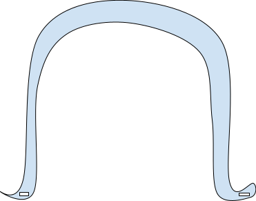
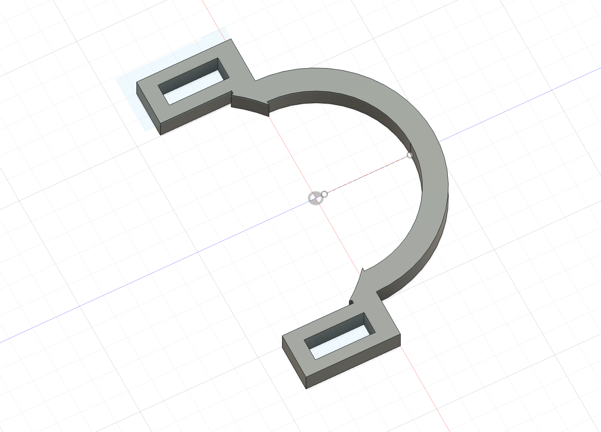
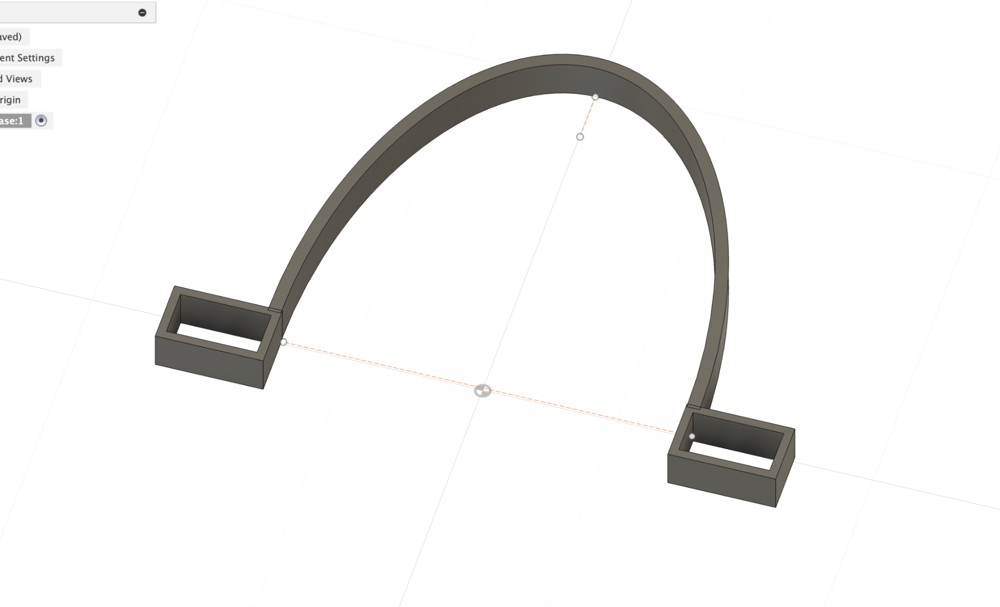

Project 6: Iteration and Defining Testing Procedures
Overview:
This week we continued to work on our final project. This week was focused on going through several iterations of prototypes and designing testing procedures that will be executed in a future update. Our professors provided us with guidelines for how to approach this phase of our project, which are addressed below:
1. Gathering Resources
We compiled our resources in a document linked here.
Part 2: Creating an Official Needs Statement
Based on the guidelines of a Needs Statement, the one we created is "Blind dogs need a way to navigate so that they can be safe and independent.
Part 3: Defining 2-4 Design Principles, or key features / functions that our prototype will need to address based on the Needs Statement: What would success look like? How will we measure it?
1. Customizable Measurement —Something that extends past dogs furthest point on face (nose). → Measure specific dogs since nose size can vary from dog to dog even if they are the same breed. Include clear instructions on how to measure and what to measure.
2. Sturdy —Can stand force, does not move around too much, is not likely to break as the dog moves around
3. Removable —if stuck on something can come off, will not choke / hurt the dog
4. Comfort—does not cause too much discomfort, allows dogs to continue their way of life without the product acting as a burden, has a learning curve that allows dog to eventually use the product properly and comfortably
Part 4: Generating Designs and beginning the Engineering Cycle
Here was our original drawing from scratch:
 Here was our first prototype design in Fusion 360:  Here is a more streamlined version of the design:  After some tweaks, we fabricated a mini prototype out of PLA from a paremetric version of the above design and used velcro to attach it to a dog model we found on ThingsVerse and 3-D printed. This process helped us test how well we could change the parameters of our design in fusion to fit our dog model.
Conclusion:
I am very happy with the progress we have made on our project this week, and look forward to exploring different materials and testing them in a more structured and formal capacity this upcoming week. This process has definitely been challenging in terms of mitigating my frustrations and coming up with ideas that work within the realm of possibility of this class. However, so far it has been very rewarding and a great learning experience.